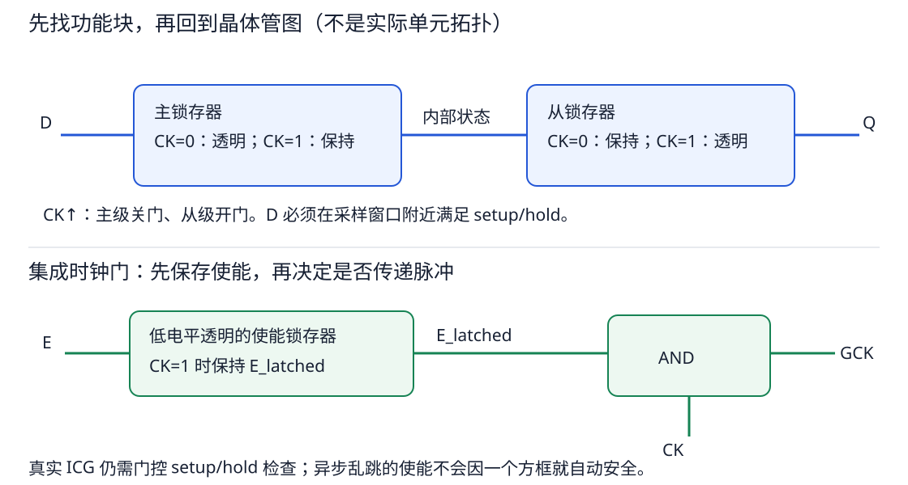
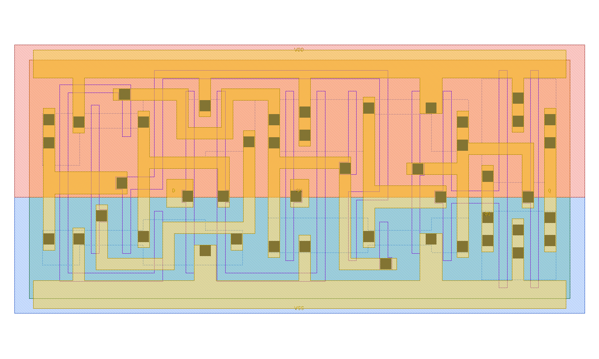
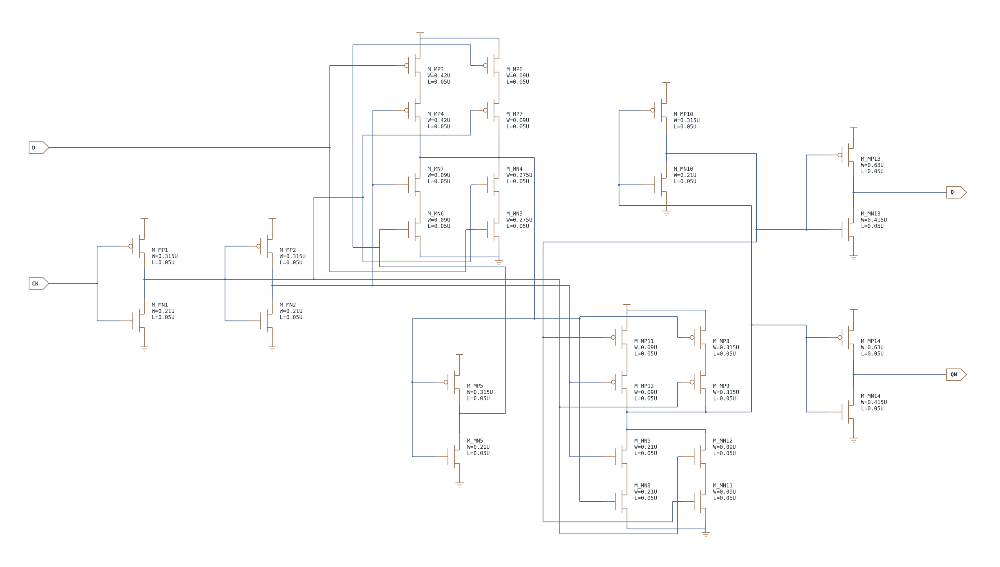
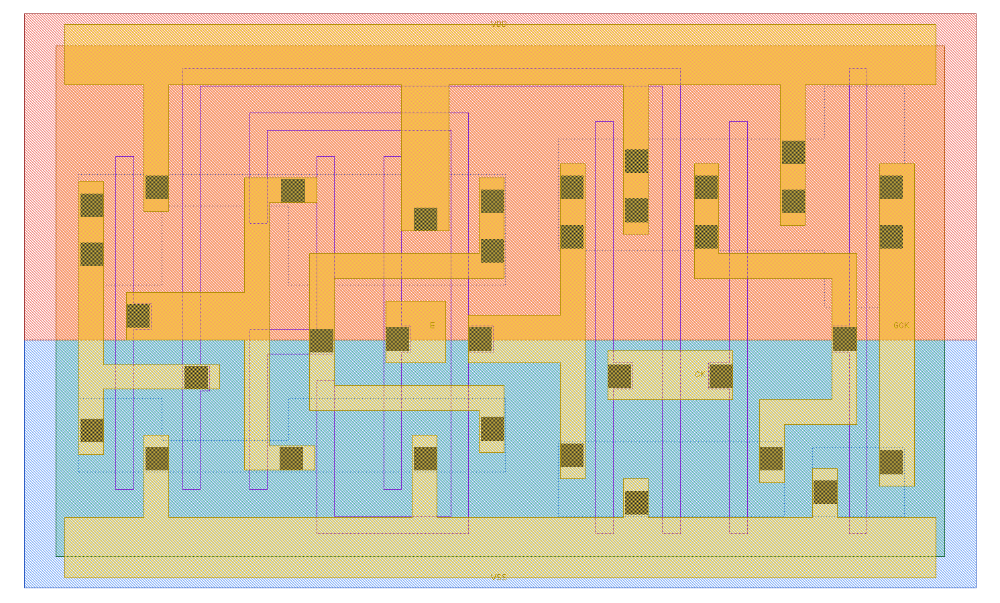
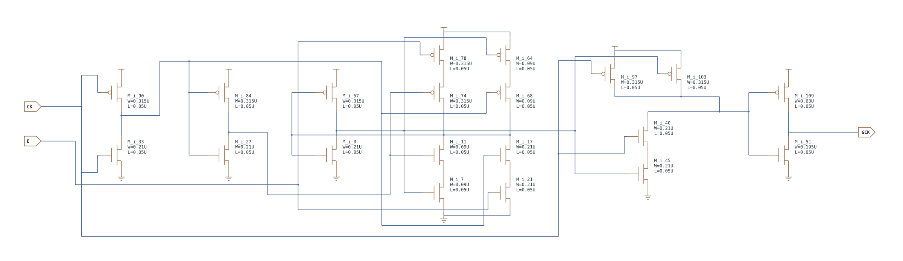

第 18 章 触发器、扫描链与时钟门控
先分析一个时钟周期，再读一张复杂晶体管图
18.1 从两个相反透明窗口理解上升沿 DFF
上一章锁存器在一整段窗口内跟随输入。现在想要的是：只在时钟上升沿附近接收一次数据，其余时间隔离 D 与 Q。一种典型主从结构，把低电平透明的主锁存器和高电平透明的从锁存器串接。下面用 M 表示主级逻辑输出，忽略概念方框内部反相；真实节点极性仍需对照本库电路。

| 阶段（已合法初始化 Q=0） | 主级 | 从级 | D/M/Q 的变化 |
|---|---|---|---|
| CK=0，先让 D=1 稳定 | 透明 | 保持 | M 跟随到 1；Q 仍为 0 |
| CK↑ | 关闭 | 打开 | 主级保存 1；Q 经内部传播后变成 1 |
| CK=1，D 改成 0 | 保持 | 透明 | M 仍为 1，从级看到的仍是 1，所以 Q 不改 |
| CK↓，D 维持 0 | 打开 | 关闭 | M 接收 0；Q 保存上一拍的 1 |
| 下一次 CK↑ | 关闭 | 打开 | Q 才更新为 0 |
于是外部看到的是上升沿采样，而不是高电平持续透明。Q 不会在边沿零延迟改变：需要 clock-to-Q 传播时间；D 还需满足 setup/hold 才能保证采对。实际时钟反相链有延迟，内部开关也不是同时瞬变，不能由这个理想相位表推出真实器件没有竞争或时序要求。更多原理可读 Harris 的 Sequential Circuits 课程，本章数值时序题是另设的教学例子。
18.2 触发器、扫描与时钟门
以下压缩表的 X 表示该输入可为 0 或 1、对该行无影响；不是数字仿真中“未知 X”的完整传播规则。先保证控制电平合法、状态已初始化，再使用这些状态表。
| 需求 | 本库可选单元 | 典型应用 | 关键控制 |
|---|---|---|---|
| 在上升沿保存一位 | DFF_X1/X2 | 流水线寄存器、数据/状态寄存器 | CK↑ |
| 异步清 0 | DFFR_X1/X2 | 复位后必须为 0 的 valid、状态位 | RN=0，独立于 CK |
| 异步置 1 | DFFS_X1/X2 | 初始化后必须为 1 的特定标志 | SN=0，独立于 CK |
| 同时需要异步清零和置位接口 | DFFRS_X1/X2 | 特殊控制状态 | RN/SN 同时为 0 是禁用组合 |
| 可串入扫描链 | SDFF/SDFFR/SDFFS/SDFFRS | 制造测试、扫描移位 | SE 选择 D 或 SI |
| 无毛刺地关闭一支时钟 | CLKGATE 系列 | 降低无效翻转的动态功耗 | 低相位保存 E，再与 CK 组合 |
| 测试时强制打开门控时钟 | CLKGATETST 系列 | 让扫描测试时钟穿过功能门控 | SE 测试使能 |
本库 DFF 结构对应 CK 上升沿采样。下表中的 ↑ 表示有效上升沿，— 表示没有有效沿：
DFF_X1/X2
| CK 事件 | D | Q(next) | QN(next) |
|---|---|---|---|
| ↑ | 0 | 0 | 1 |
| ↑ | 1 | 1 | 0 |
| — | X | Q(previous) | QN(previous) |
应用例子：流水线把组合逻辑切成多段，每段末尾用 DFF 在 CK↑ 保存结果；有限状态机用一组 DFF 保存当前状态；计数器让加一器输出回接下一拍 D。DFF 只在有效边沿附近观察 D，不会像 DLH 那样在整个高电平期间持续透明。Q 和 QN 是互补输出，若只需要 Q，是否仍付出 QN 的面积/负载取决于具体单元内部结构和库实现。
DFFR / DFFS / DFFRS：低有效异步控制
| 单元 | 控制条件 | CK | Q(next) | QN(next) |
|---|---|---|---|---|
| DFFR | RN=0 | X | 0 | 1 |
| DFFR | RN=1 | ↑ | D | !D |
| DFFR | RN=1 | — | 保持 | |
| DFFS | SN=0 | X | 1 | 0 |
| DFFS | SN=1 | ↑ | D | !D |
| DFFS | SN=1 | — | 保持 | |
| DFFRS | RN=0, SN=1 | X | 0 | 1 |
| DFFRS | RN=1, SN=0 | X | 1 | 0 |
| DFFRS | RN=1, SN=1 | ↑/— | 有 ↑ 则采 D；否则保持 | |
| DFFRS | RN=0, SN=0 | X | 禁用组合；不要依赖输出/优先级 | |
异步控制的“异步”指拉低 RN/SN 不需要等待时钟边沿。释放异步复位/置位时却必须满足 recovery/removal（恢复/移除）检查；不同寄存器若在时钟边沿附近以不同时间离开复位，状态可能不一致。常见策略是异步拉低、再用目标时钟同步释放，但必须由芯片复位架构和目标库时序模型决定。
SDFF / SDFFR / SDFFS / SDFFRS
扫描单元先用 SE 选择有效数据：
| SE | D | SI | D* |
|---|---|---|---|
| 0 | 0 | X | 0 |
| 0 | 1 | X | 1 |
| 1 | X | 0 | 0 |
| 1 | X | 1 | 1 |
SDFF 在 CK↑ 时令 Q(next)=D*；SDFFR、SDFFS、SDFFRS 分别再套用上表同名 DFF 的 RN/SN 异步控制。这样已穷尽四个扫描族，而不必重复四张相同的大表。
扫描链例子：功能模式令 SE=0，每个 SDFF 从 D 采样。测试移位时令 SE=1，把第 0 个触发器的 Q 接第 1 个 SI，第 1 个 Q 再接第 2 个 SI；每来一个时钟边沿，测试比特向后移动一位。扫描单元并不是普通 DFF 的同义词：多出的选择网络会改变面积、D/SE/SI 输入电容和时序弧。
{kind=link}

{kind=link}

CLKGATE / CLKGATETST
集成时钟门在 CK 低电平期间锁存使能，避免 E 在 CK 高电平变化时截断脉冲。稳态功能可写为 GCK=CK·E_latched；测试版先令 E*=E+SE。
| CLKGATE：E_latched | CK | GCK |
|---|---|---|
| 0 | 0 | 0 |
| 0 | 1 | 0 |
| 1 | 0 | 0 |
| 1 | 1 | 1 |
| CLKGATETST：E | SE | E*=E+SE | 随后行为 |
|---|---|---|---|
| 0 | 0 | 0 | 时钟关闭 |
| 0 | 1 | 1 | 测试强制开启 |
| 1 | 0 | 1 | 功能开启 |
| 1 | 1 | 1 | 开启 |
为什么不能用普通 AND 门代替时钟门
若直接令 gclk=clk·enable，enable 在 clk=1 时从 1 变 0 会把高脉冲截短；从 0 变 1 又可能在周期中途制造一个窄脉冲。集成时钟门先在安全相位保存 E，使整个高脉冲期间参与 AND 的值保持稳定。典型用法是某寄存器块长期不工作时关闭其时钟，减少时钟树和寄存器内部无效翻转；它并不会自动关闭数据组合逻辑的所有功耗。
| 场景 | E | SE | 预期 |
|---|---|---|---|
| 功能块运行 | 1 | 0 | GCK 传递完整时钟脉冲 |
| 功能块空闲 | 0 | 0 | GCK 保持低，受控寄存器不翻转 |
| 扫描测试 | 可能为 0 | 1 | CLKGATETST 强制打开路径，扫描时钟仍能到达 |
{kind=link}

{kind=link}

18.3 把三类检查放在同一个例子中
| 检查 | 关注什么 | 如何激励 | 失败时可能看到什么 |
|---|---|---|---|
| Clock-to-Q | 合法采样后 Q 多久翻转 | 先让 D 稳定，保证旧 Q 与新 D 相反，再施加有效 CK 边沿 | Q 不变、太迟跨阈值、波形不完整 |
| Setup / hold | D 相对 CK 的允许时间窗口 | 逐步移动 D 的翻转时刻，按既定判据搜索边界 | 采错、clock-to-Q 明显恶化、亚稳态 |
| Recovery / removal | 异步复位/置位释放相对 CK 的要求 | 控制 RN/SN 的撤销时刻，而不只是让 D 翻转 | 释放后状态不可靠或恢复很慢 |
例如先存 Q=0，再把 D=1 稳定好，给上升沿，应测到 Q↑。若 Q 原来就是 1，D 也为 1，这一拍 Q 保持 1 完全正确；用它去测上升延迟就会找不到 crossing。这正是表征排错时需要问“旧状态是什么”的原因。
亲手算边沿前后各自限制谁
假设相关 CK↑ 在 10 ns，教学 setup=0.2 ns、hold=0.1 ns、clock-to-Q=0.15 ns，则 D 至少应在 9.8～10.1 ns 保持本次采样值；合法采到与旧 Q 相反的新值时，Q 的测量阈值约在 10.15 ns 被跨过。不要把 0.15 ns 当成 D 需要稳定的时间。
| 操作 | 按本例要求检查 | 结论 |
|---|---|---|
| D 在 9.7 ns 到达，10.2 ns 才再次变化 | 覆盖 9.8～10.1 ns | 满足本例数据窗口 |
| D 在 9.9 ns 才到达 | 晚于最迟 9.8 ns | 建立时间不满足 |
| D 在 10.05 ns 就再次变化 | 早于允许的 10.1 ns | 保持时间不满足；降低时钟频率不自动把这个近沿变化移走 |
再假设低有效 RN 的 recovery=0.3 ns、removal=0.1 ns：若打算在 10 ns 这一沿开始正常工作，RN 应按本例至少提前到 9.7 ns 释放；若该沿仍保持复位，则不要在紧随其后的 0.1 ns 保护区内释放，且要满足下一有效沿的恢复要求。这里检查的是 RN 从 0 到 1 的撤销事件，不是 D，也不是 RN 从 1 到 0 的复位断言。实际约束可以含负值、条件及不同阈值，必须查目标库；违反要求代表不再有正确性保证，不代表每次都必定采错。
18.4 扫描链不是同一拍串行穿过所有寄存器
设三个 SDFF 共用 CK/SE，连接 Q0→SI1、Q1→SI2，链头 SI0 输入数据，初始 Q0/Q1/Q2=000。令 SE=1，依次输入 1、0、1：
| 采样边沿 | SI0 | Q0(next) | Q1(next) | Q2(next) |
|---|---|---|---|---|
| 第 1 拍 | 1 | 1 | 0 | 0 |
| 第 2 拍 | 0 | 0 | 1 | 0 |
| 第 3 拍 | 1 | 1 | 0 | 1 |
每一拍后级采到的是前级这一拍之前已稳定的旧 Q，不是前级刚更新的新 Q；真实电路仍要满足扫描链保持时间。SE 返回 0 后切回各自功能输入 D，切换本身也需要满足方法学和时序约束。
18.5 ICG 为什么能保住完整脉冲
举一个带时间的关钟请求：CK 的高相为 5～10 ns、15～20 ns；E 最初为 1，在 7 ns 改为 0，并一直保持。忽略传播延迟，假设满足门控检查：
| 时刻 | CK / E | 普通 CK AND E | 低透明锁存器 + AND 的 ICG |
|---|---|---|---|
| 5 ns 上升沿 | 1 / 1 | 升为 1 | E_latched=1，GCK 升为 1 |
| 7 ns 关闭请求 | 1 / 0 | 立刻降为 0，把 5 ns 高脉冲截成 2 ns | 锁存器已关闭，E_latched 仍为 1，GCK 保持高 |
| 10 ns 下降沿后 | 0 / 0 | 保持 0 | GCK 正常下降；低相允许 E_latched 更新为 0 |
| 15 ns 下一上升沿 | 1 / 0 | 保持 0 | E_latched=0，因此整个新脉冲被阻止 |
关闭时钟不是把正在进行的高脉冲从中间砍掉，而是在允许的时刻决定是否传递下一整个脉冲。如果 E 恰在锁存关闭边界附近变化，这个理想表不足以保证结果，仍需门控 setup/hold。
直接 AND 时钟时，CK=1 期间 E 从 1 降为 0 会马上截短 GCK。低电平透明使能锁存器把 E 保存在 E_latched：CK=0 时允许更新，此时 GCK 本来就是 0；CK=1 时不允许 E_latched 改变，因此当前高脉冲保持完整。这个结论依赖使能满足门控时序检查，不是“只要用了 ICG 永远不会有毛刺”。
测试使能 SE 通常用于让功能关闭的时钟域在扫描测试时仍可获得时钟。本库 CLKGATETST 先对 E/SE 做 OR，再锁存；不应假设任意时刻改变 SE 都完全安全。ICG 节省的是停止翻转的时钟与受控寄存器相关动态功耗，不等于对整个模块断电。
- D=1、Q 旧值=1，测 clock-to-Q rise 为什么可能失败？应如何预置？
- RN=0 时不断打时钟，却期望 DFFR 输出随 D 翻转，哪里不对？
- CK 高期间 E 从 1 降 0，普通 AND 与合法 ICG 分别会怎样？
答案
① 没有输出上升事件；先合法写 Q=0，再稳定 D=1，给有效边沿。② 低有效异步复位持续压住 Q=0，应先按要求释放。③ AND 截短当前高脉冲；ICG 的已锁存使能不变，当前脉冲完整，在后续安全窗口接受关闭请求。